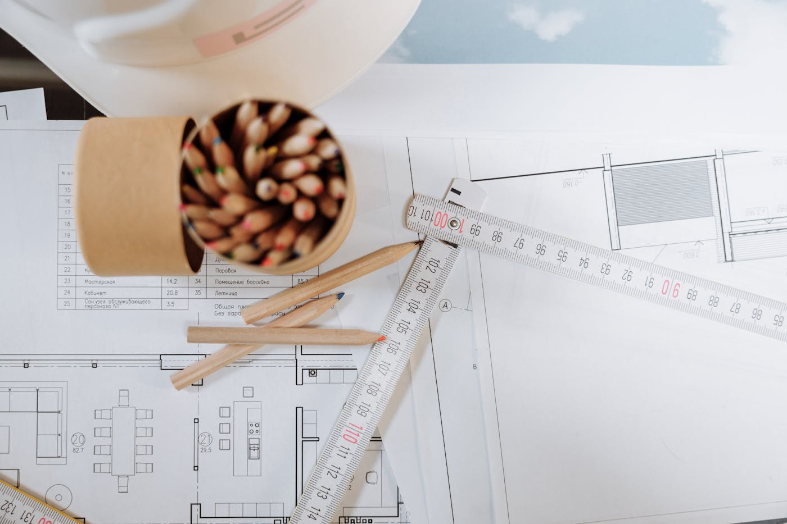
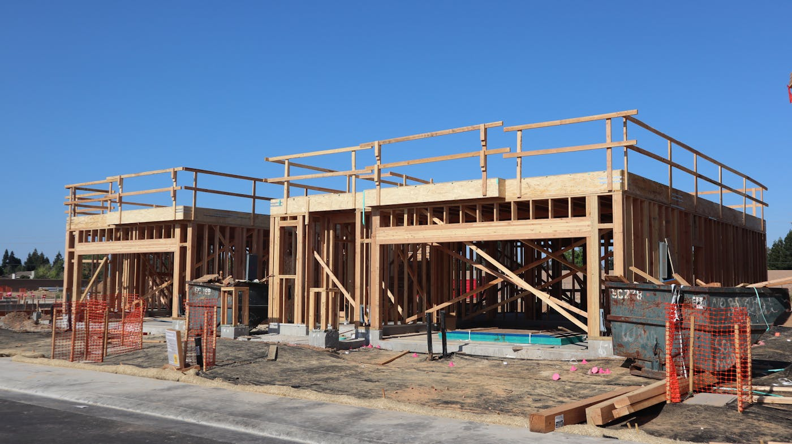
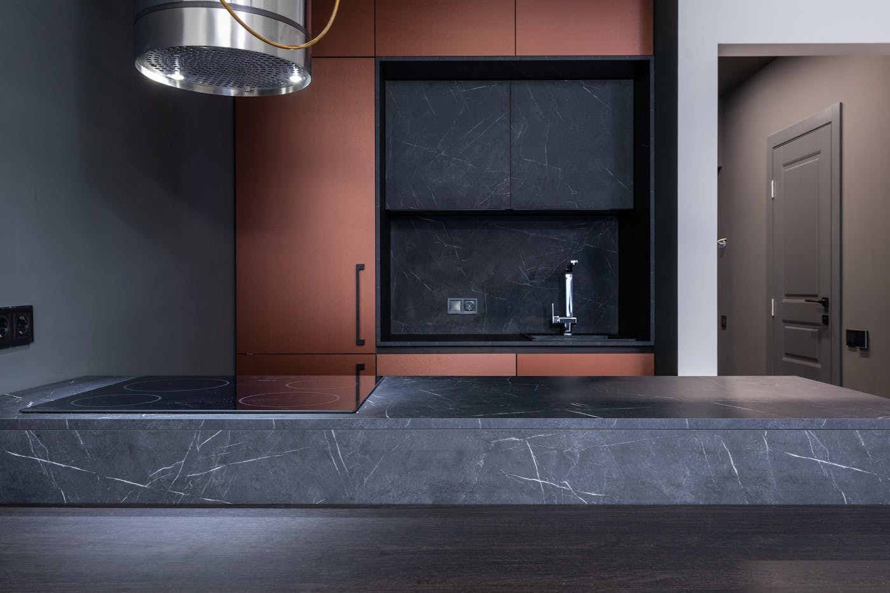

Quick answer: A first home build in NSW involves securing land, engaging a licensed builder, obtaining council approvals, and constructing through eight stages over 10–18 months. Construction costs in Sydney range from $2,500 per m² (basic outer-suburban volume build) to $5,000+ per m² (custom specification in established suburbs). The NSW First Home Owner Grant provides $10,000 for new homes valued under $750,000 combined land and build. Stamp duty exemptions on homes up to $800,000 save a further $30,000+. These two benefits can be claimed simultaneously. Total cost of a first home build in Western Sydney typically falls between $700,000 and $1.1M all-in; in inner or northern suburbs, $1.2M–$2M+.
The phrase “building your first home” appears in a remarkable number of brochures. Always next to a smiling couple who seem to be having a substantially better time than anyone inside an actual building contract ever has.
[Right. Straight face now.] Here is what the process actually involves in NSW in 2026: what a first home build costs at each specification, which government schemes apply and how they work together, what happens at each of the eight construction stages, and the circumstances under which building is genuinely the wrong decision.
- What a first home build actually involves
- What it costs to build your first home in Sydney
- Government grants and schemes in 2026
- How the NSW grants work together
- The eight stages of building a house in NSW
- The realistic timeline
- Build or buy: the honest comparison
- What nobody tells you before you sign
- When a first home build is the wrong choice
- Six questions to ask your builder first
- FAQ
What a First Home Build Actually Involves
A first home build is the process of constructing a new residential dwelling on a block of land you own or are purchasing — as opposed to buying an existing home. In NSW, the two most common paths are a house and land package (where you buy a registered lot in a new estate from a developer and contract a builder to construct on it) and a knockdown rebuild (where you purchase an existing property, demolish the original home, and build new).
A third path — purchasing a vacant infill lot in an established suburb and building from scratch — exists but is uncommon for first home buyers, partly because vacant lots in established Sydney are scarce and priced accordingly.
Each path involves the same core steps: securing finance, engaging a licensed builder, obtaining a Development Application (DA) or Complying Development Certificate (CDC) from council, and constructing through the regulated building stages. The differences are in site preparation costs, approval timelines, and what you’re getting at the end.
For a broader picture of what the build process looks like from start to finish, our guide to building a new home in Sydney covers the full journey in more detail.

Photo via Pexels
What It Costs to Build Your First Home in Sydney
Construction costs vary significantly by location, specification, and builder type. The figures below reflect 2026 pricing for metropolitan Sydney.
| Build Type | Cost per m² (construction) | Typical home size | Construction cost range |
|---|---|---|---|
| Volume / project home (outer Western Sydney) | $1,800 – $2,500 | 180–220 m² | $324,000 – $550,000 |
| Mid-spec custom or semi-custom | $2,500 – $3,500 | 180–220 m² | $450,000 – $770,000 |
| Well-specified custom (inner / northern suburbs) | $3,500 – $5,000 | 200–260 m² | $700,000 – $1.3M |
| Architectural / high specification | $5,000 – $7,500+ | 220–300 m² | $1.1M – $2.25M+ |
Construction cost is not the full cost. A realistic first home build budget in Sydney must include:
- Land: $500,000–$700,000 for a standard lot in outer Western Sydney; $900,000–$1.8M+ in middle and northern suburbs
- Site costs: $15,000–$60,000 for preparation, excavation, and connections (varies with soil type and slope)
- Design fees: $8,000–$25,000 for a volume home; $40,000–$120,000 for custom architecture
- Structural engineering and energy assessments: $5,000–$15,000
- Council contributions and fees: $10,000–$50,000 depending on LGA
- Landscaping, driveways, fencing: $25,000–$80,000
- Window furnishings, appliances, and fixings not in the contract: $15,000–$40,000
A house and land package in outer Western Sydney — including a standard 180m² volume build — comes out at $700,000–$950,000 all-in at current prices. That figure surprises buyers who started with the headline construction price from the builder’s brochure. It should not surprise you.
Government Grants and Schemes for First Home Builders in 2026
NSW and the federal government offer four distinct forms of assistance for first home buyers building new. Each has its own eligibility criteria and they interact in ways that most guides treat separately.
First Home Owner Grant (FHOG) — $10,000
A one-off $10,000 payment from the NSW Government for first home buyers who build or purchase a brand-new home. The combined value of land and construction must not exceed $750,000. There is no income test. You apply through your lender when the building loan first draws down, or directly through Revenue NSW.
First Home Buyers Assistance Scheme — Stamp Duty Exemption
First home buyers pay no transfer duty (stamp duty) on homes valued up to $800,000. A partial exemption applies on homes between $800,000 and $1,000,000. On a home valued at $800,000, the full exemption saves approximately $31,335. This applies to both the land component and the construction contract.
First Home Guarantee — 5% Deposit, No LMI
The federal government guarantees the loan top-up between your deposit and 80% LVR, allowing eligible buyers to purchase or build with as little as a 5% deposit without paying Lenders Mortgage Insurance. The scheme has 35,000 places per year nationally. Income caps apply: $125,000 for singles, $200,000 for couples. The property value cap for Sydney new builds is $900,000 in 2026.
Help to Buy — Shared Equity (New from December 2025)
A federal government shared equity scheme in which the government co-purchases up to 40% of a new home’s value alongside you. You need a minimum 2% deposit. The government holds an equity share that is interest-free — no rent, no repayments on their portion. When you sell (or choose to buy out the government’s share), the equity is returned. Income caps are $90,000 for singles and $120,000 for couples. Places are limited and administered through approved lenders.
How the NSW Grants Work Together — the Part Most Guides Miss
This section is the one most first home buyer guides skip. We are not most guides.
The FHOG and the stamp duty exemption are not mutually exclusive. If your new home is valued under $750,000 combined, you can receive the $10,000 FHOG and pay zero stamp duty simultaneously. On an $800,000 home, the stamp duty exemption alone saves $31,335. Claimed together on a $700,000 build, the combined benefit is approximately $41,000 — material against a 10% deposit of $70,000.
The First Home Guarantee (5% deposit, no LMI) can be used alongside the FHOG and stamp duty exemption, as long as the property value sits within the $900,000 Sydney cap. Help to Buy, being a shared equity arrangement, cannot be combined with the First Home Guarantee — it is an either-or choice.
The practical implication: a first home builder targeting a $700,000–$800,000 house and land package in Western Sydney can potentially enter the market with a 5% deposit, no LMI, no stamp duty, and $10,000 in grant cash. Getting there requires hitting all four eligibility criteria simultaneously. Check your eligibility at the NSW Planning Portal and Revenue NSW before signing any contract.

Photo via Pexels
The Eight Stages of Building a House in NSW
Residential construction in Australia follows eight regulated stages. Your building contract will tie progress payments to each stage — the lender pays each draw-down after the stage is inspected and certified.
- Site preparation: Demolition (if knockdown rebuild), excavation, retaining walls, drainage connections, and service trenching.
- Slab or footings: The concrete foundation is poured. Type depends on soil classification — from a basic M-class slab to deep piers on reactive or unstable ground.
- Frame: Timber or steel framing erected for walls, floors, and roof structure. The home takes its shape at this stage.
- Roof and lock-up: Roofing installed, external walls closed (brickwork or cladding), windows and external doors fitted. The structure is “locked up” and weatherproof.
- Fit-out and rough-in: Internal plumbing, electrical wiring, HVAC rough-in, insulation, and BASIX compliance measures installed within the wall cavities before lining.
- Internal fix: Plasterboard lined and set, internal doors hung, kitchen joinery and bathroom cabinetry installed, tiling completed.
- Completion: Painting, floor coverings, fixtures and fittings installed, electrical and plumbing final connections made, appliances fitted.
- Practical completion and handover: Final inspection by the private certifier, Occupation Certificate issued, keys handed over. The defects liability period (typically 13 weeks under HIA contracts) begins at this point.
Each stage draw-down is a payment milestone in your building contract. Never pay the next draw-down before the preceding stage has been independently certified — this is a condition of most construction loans, and it protects you.
The Realistic Timeline for a First Home Build
| Phase | Duration |
|---|---|
| Finance pre-approval and land purchase | 2–4 months |
| Builder selection and contract negotiation | 4–12 weeks |
| Design and documentation | 8–16 weeks (volume) / 3–6 months (custom) |
| DA or CDC approval | 20 business days (CDC) / 2–6 months (DA, varies by LGA) |
| Construction — single storey | 10–14 months |
| Construction — double storey | 12–18 months |
For a straightforward house and land package with a volume builder through a CDC approval, total elapsed time from signing the land contract to handover is typically 14–18 months. For a custom build in an established suburb requiring a DA, allow 20–28 months. These are medians, not ceilings. Supply chain disruptions, weather, and council delays all extend timelines without requiring anyone to have done anything wrong.
If you are renting while building, include that rental cost in your financial modelling. Eighteen months at Sydney rent rates is a significant additional outlay.
Build or Buy: the Honest Comparison
“Build vs buy” gets framed as a financial question when it is really a question about what you are getting for the money.
Where building has a genuine advantage:
- You receive a 7-year structural warranty (home building compensation insurance) and a 2-year defects warranty on non-structural elements — an existing home has no warranty
- The home meets current energy efficiency standards (NatHERS 7-star, BASIX) — older homes typically do not, and retrofitting costs real money
- You qualify for the FHOG and stamp duty exemptions — buying an existing home gives you the stamp duty exemption but not the $10,000 FHOG
- The home is designed around your life, not someone else’s 1994 renovation brief
Where buying existing has a genuine advantage:
- You can move in immediately — no 14–24 months of design, approval, and construction
- In established suburbs, you are buying location — land value and amenity that a new estate on the fringe cannot replicate
- No construction risk: the home exists, it has been inspected, the price is fixed
The build-or-buy decision rarely comes down to price alone. It comes down to how much uncertainty you can absorb, how long you can wait, and whether the new build’s features are worth the additional complexity. See our guide to choosing a custom home builder if you are leaning toward building and want to understand the builder selection process.

Photo via Pexels
What Nobody Tells You Before You Sign the Building Contract
The building contract is a longer document than the home loan terms. Most first home builders read neither as carefully as they will later wish they had.
Preliminary costs are real and come early. Most builders charge a preliminary agreement fee — typically $1,500–$5,000 — to cover design, engineering, and council lodgement before a formal building contract is signed. This fee is paid before you have committed to anything. It is also non-refundable if you walk away.
Site costs are often excluded from the headline price. Volume builders quote construction cost on an assumed Class M slab on flat ground. If your soil report comes back as Class H1, H2, or E (highly reactive or expansive), foundation costs increase. The variation between a basic slab and a deep pier system on a reactive site can be $20,000–$50,000. This is legal, disclosed in the contract, and routinely not discussed at the sales consultation.
Variations add up. Every choice you make outside the standard inclusions — an upgraded benchtop, a different tapware range, an additional power point — is processed as a formal variation at the builder’s margin. Aggregate variation costs on a first home build frequently reach $30,000–$80,000 above the base contract. The variations clause governs how these are priced and approved — read it before you sign.
The defects liability period starts at handover, not when you find the defect. Under the NSW Home Building Act, you have a 2-year statutory warranty for non-structural defects and a 6-year warranty for major defects. Report defects in writing — documented and dated — during the defects period. Verbal reports to the site supervisor do not create a legal record.
For additional context on managing the builder relationship, our guide to how to choose a builder in Sydney covers the contract and licence verification process in detail. You can verify any NSW builder’s licence status directly on the NSW Fair Trading licence register.
When a First Home Build Is the Wrong Choice
Not every first home buyer should build. These are the situations where it genuinely is not the right path.
If you need to move within 12 months. A construction loan does not give you a home to live in. If your rental situation requires you to move in the near term — lease ending, family circumstances — the 14–22 month build timeline is not compatible with that need.
If your total budget is under $600,000. Land in Sydney costs at least $500,000–$600,000 for an entry-level lot in outer Western Sydney. At that land price, you have little left for construction, design, council fees, and the inevitable variations. The arithmetic does not work, and a builder who tells you otherwise is telling you what you want to hear.
If the suburb you want has no available land. Most first home buyers building in 2026 are doing so in new estates in Penrith, Blacktown, Camden, and Liverpool LGAs — not Mosman, Balmain, or Randwick. If your location requirement cannot flex to where land exists, the build path is not available to you. Explore our guides to building in Sydney’s western suburbs to understand where land-and-build is most viable.
If you need absolute cost certainty from day one. A fixed-price building contract gives you significant cost certainty, but not complete certainty. Site conditions, soil reports, and variations can move the final number. If cost uncertainty of $20,000–$80,000 above contract is genuinely unworkable for your situation, buying an existing home with a fixed purchase price is the more predictable path.
Six Questions to Ask Your Builder Before You Sign
Do this homework before the first phone call, not after three good site meetings and a brochure you quite like.
- Are you licensed for residential construction in NSW, and can I verify your licence number? The licence must be current, in the company’s name, and cover the class of work. Check it yourself on the NSW Fair Trading register — do not rely on the builder to describe their own licence accurately.
- Does the contract price include site costs, or are they a post-soil-report variation? Ask for the site cost allowance in the contract and what triggers a variation above it. A builder who cannot answer this clearly is a builder whose site cost variation clause will not be in your favour.
- Who is the licensed site supervisor on my project, and how many sites will they be running simultaneously? Quality and communication on a first home build correlate directly with site supervisor attention. A supervisor managing eight sites at once is not managing any of them well.
- What is included in the base contract price, and what are common upgrade items? Ask for a full inclusions list in writing before you sign. Items that feel standard — stone benchtops, quality tapware, ceiling fans — are frequently excluded from the headline price and sold as upgrades at significant margin.
- Can I speak with two or three clients who moved in within the last 12 months? Recent references reflect current build quality and communication standards. References from three years ago reflect a different team, a different supply environment, and a different market.
- What is your current build programme, and when can you realistically start construction? A builder with no wait time may have no work. A builder with a 9-month wait is usually in demand for a reason. Ask both questions and judge the answer in context.
FAQ
How much does a first home build cost in Sydney in 2026?
Construction costs in Sydney range from $2,500 per m² for a basic volume build in outer Western Sydney to $5,000+ per m² for a well-specified custom home in inner or northern suburbs. A 180m² home at mid-spec runs $450,000–$720,000 in construction costs alone, before land, design fees, council contributions, and landscaping. All-in, a typical first home build in Western Sydney falls between $700,000 and $1.1M; in the inner west or north shore, expect $1.2M–$2M+.
What is the First Home Owner Grant NSW and how much is it?
The NSW First Home Owner Grant (FHOG) is a one-off $10,000 payment from the NSW Government for first home buyers who build or purchase a brand-new home. It applies to new builds, off-the-plan purchases, and substantially renovated properties. The home must be valued under $750,000 (land and construction combined). There is no income test. You apply through your lender or directly with Revenue NSW at settlement or on first draw-down of the building loan.
Do first home builders get stamp duty exemption in NSW?
Yes. Under the NSW First Home Buyers Assistance Scheme, first home buyers pay no stamp duty on homes valued up to $800,000. A partial exemption applies between $800,000 and $1,000,000. On a home valued at $800,000, the full exemption saves approximately $31,335. This applies to land and construction contracts. The exemption and the FHOG can be claimed simultaneously if you meet both sets of criteria.
How long does a first home build take in NSW?
A single-storey home in NSW typically takes 10–14 months to build from slab pour to handover. Double-storey homes run 12–18 months. Add 3–6 months before construction starts for design, engineering, and council approvals. Total elapsed time from engaging a builder to moving in is commonly 14–22 months for a straightforward build. Complex sites or slow council assessment extend that range.
Is it cheaper to build or buy a house in Sydney?
It depends on suburb and specification. In outer Western Sydney, building new on a greenfield lot can be cost-competitive with buying an existing home at similar quality — and you receive the FHOG, potential stamp duty exemption, and a 7-year structural warranty. In established inner and northern suburbs, land cost makes building materially more expensive than buying comparable existing stock. The build-or-buy decision is less about price and more about what you are getting for that price.
What is the Help to Buy scheme and does it apply to new builds?
Help to Buy is a federal government shared equity scheme that launched in December 2025. The government contributes up to 40% of the purchase price of a new home (30% for existing homes), becoming a co-owner with no rent or interest charged on their share. You need as little as a 2% deposit. Income caps apply: $90,000 for singles, $120,000 for couples. The scheme is administered through participating lenders and has limited places per year.
What are the eight stages of building a house in Australia?
The eight standard stages are: (1) site preparation and excavation, (2) slab or footings, (3) frame, (4) roof and lock-up, (5) fit-out and rough-in, (6) internal fix, (7) completion, and (8) practical completion and handover. Your building contract ties progress payments to each stage. Each stage is inspected by a certifier before the next begins.
What mistakes do first home builders commonly make?
The most common mistakes are: underestimating total cost by relying only on the headline construction price; not verifying the builder’s NSW licence independently; missing grant eligibility thresholds; choosing the lowest quote without checking references; and not reading the variations clause before contracts are exchanged. Our guide to choosing a custom home builder covers the selection and verification process in detail.